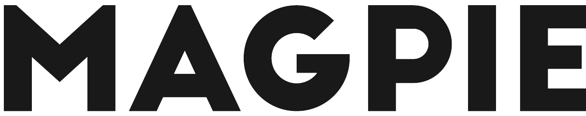
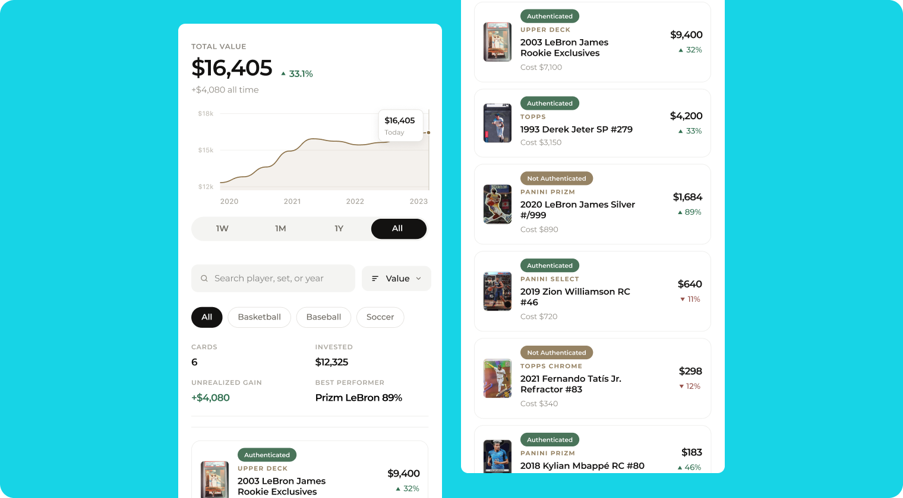
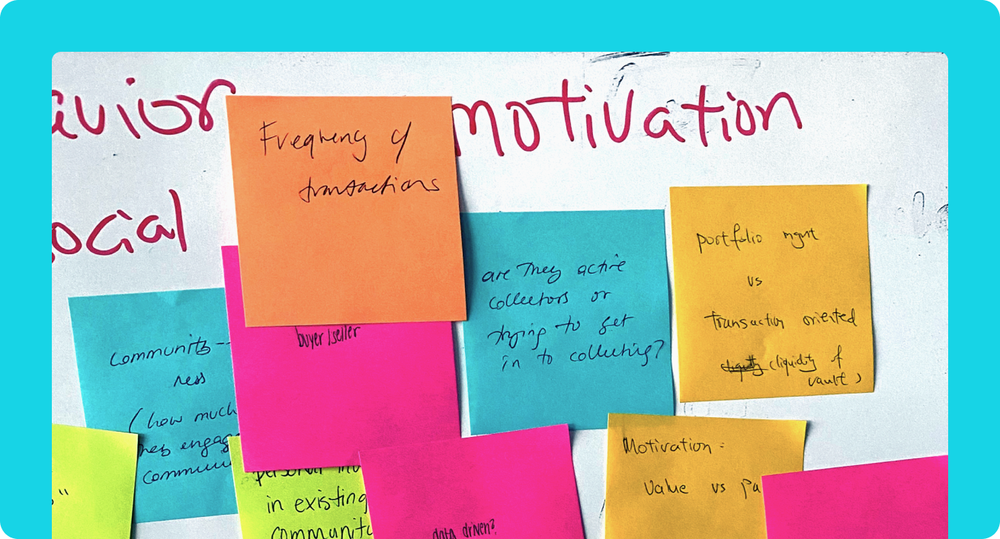
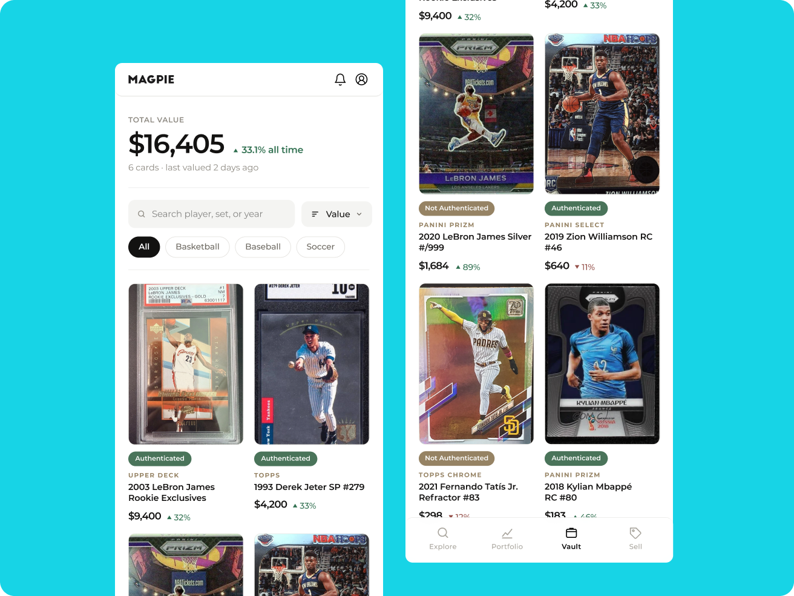

Designing a 0-to-1 Collectibles Platform Through a Founding Pivot
Freelance design lead pre-product-market-fit, pivoting the product after research overturned its founding hypothesis.

The Situation
I joined as freelance design lead during Entrepreneurs Roundtable Accelerator, working alongside the founder and a product manager, with a freelance designer of my own supporting the work. The company was pre-product-market-fit, and my job was to help take it from an early hypothesis to a shipped beta.
The Problem We Started With
The product began as a fraud-prevention tool. By beta, it was live as authentication for sports cards: photo and video forensic analysis to help collectors verify high-value items before buying or selling.
That authentication work surfaced something bigger. Collectors weren't just worried about fakes. They were managing entire collections scattered across emails, spreadsheets, and marketplaces, with no reliable way to track what they owned or what it was worth. The company repositioned around that larger opportunity and relaunched as Magpie.
The Constraint
The founder had already decided what the product was when I joined: an authentication tool that verified high-value collectibles before they changed hands. My job was to help take that conviction to a shipped beta. But her actual goal was problem-solution fit, not product-market fit. She wanted something that solved a real problem for collectors, even if the problem itself turned out to be different from the one she'd started with. Every design decision had to be able to survive that shift if the research called for it, and by beta, it did.
What We Learned

Research synthesis from early collector interviews.
Research didn't stop at the rename. The first Magpie beta tested that bigger vision across categories, handbags and sneakers included, before continued interviews narrowed it back to trading cards. It was the category the authentication work had started in, and the one Magpie ultimately shipped and was acquired for. Three challenges kept surfacing:
- Time and effort to track and value collections spread across multiple categories
- Cost and friction involved in buying, selling, and trading
- Limited places to connect with other collectors and actually enjoy the hobby
My main reason for starting an Instagram page for my collection was so I could enjoy items that aren't regularly displayed or in storage.
An early Magpie userIn these other platforms you can never track price fluctuations… the changes I want to know.
An early Magpie userWhat I Designed
The easier path was to keep deepening the authentication work: more file types, tighter forensic detection, higher accuracy. Research pointed toward a bigger opportunity, so I translated those three challenges directly into what shipped:
- Value: portfolio-style tracking so a collector could see what their whole collection was worth at a glance, not just one item at a time
- Trade: a lower-friction path to buy, sell, and trade within the platform
- Discover & Share: a way for collectors to connect with each other, closer to a community than a marketplace
Underneath all three sat the authentication work the product started with. Every item added to a collection could still be verified, so the fraud-prevention capability didn't disappear. It became infrastructure for trust instead of the whole product.

One shared vault view carried all three post-authentication jobs.
Evidence It Worked
One collector's experience captured why the authentication layer mattered even after the pivot. He used Magpie to catalog and share a collection of over a thousand items, and the platform's audit process caught that one of his graded cards had been decertified after counterfeiters copied it. He was able to resolve it quickly.
Outcome
Magpie shipped with integrations into eBay, Shopify, and other marketplaces collectors already used, with another 213 collectors already in the pipeline heading into 2022. The company was later acquired.
Reflection
The hardest part of this project wasn't any single screen. It was staying honest about what research was actually telling us, even after the company had already repositioned around a bigger opportunity. The rename came first. What Magpie actually became came from watching real collectors use the beta and listening when their problems didn't match the pitch.